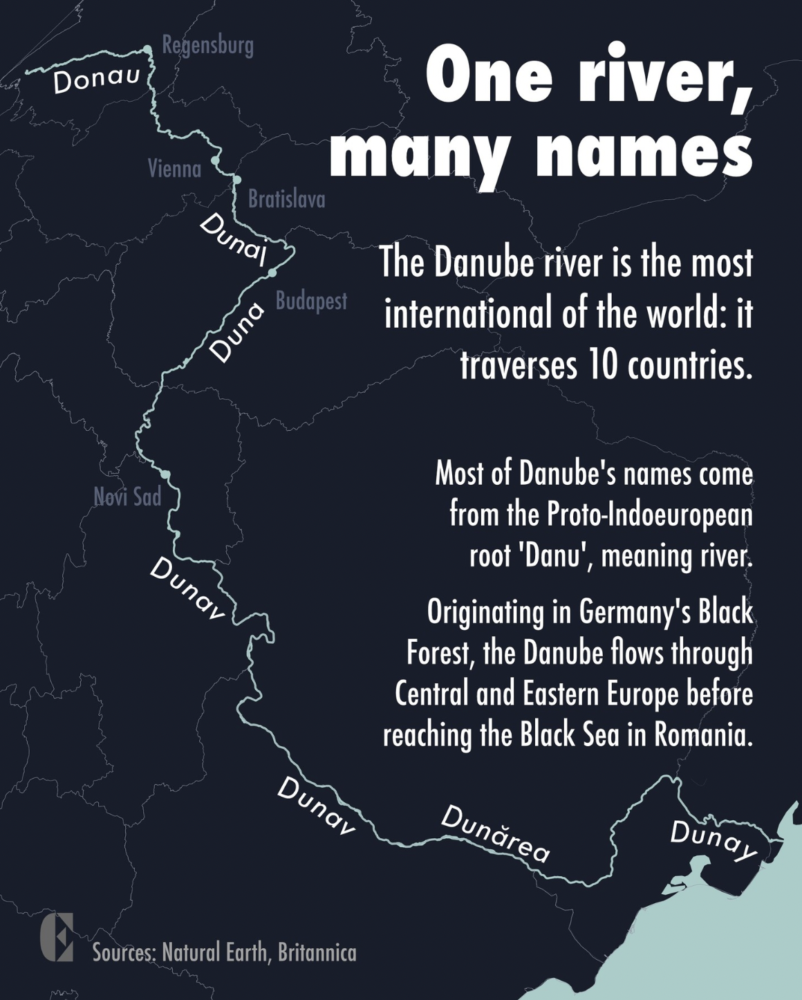
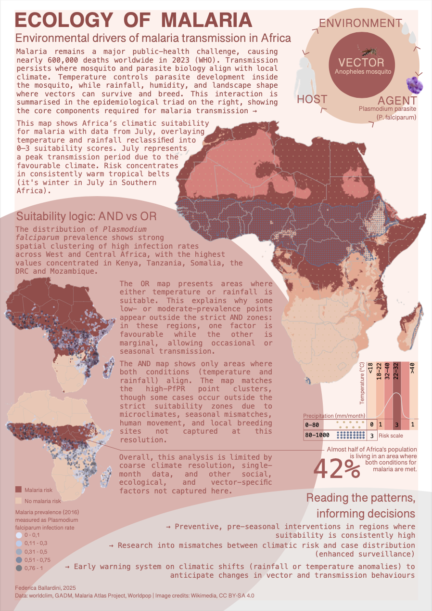
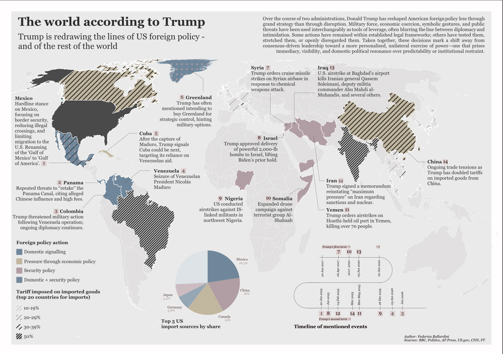
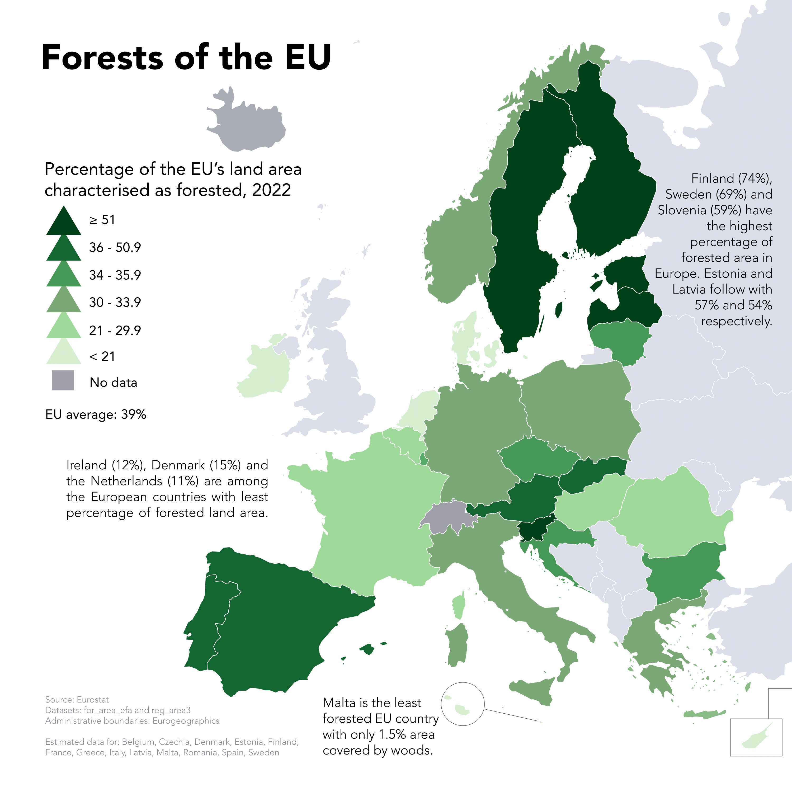
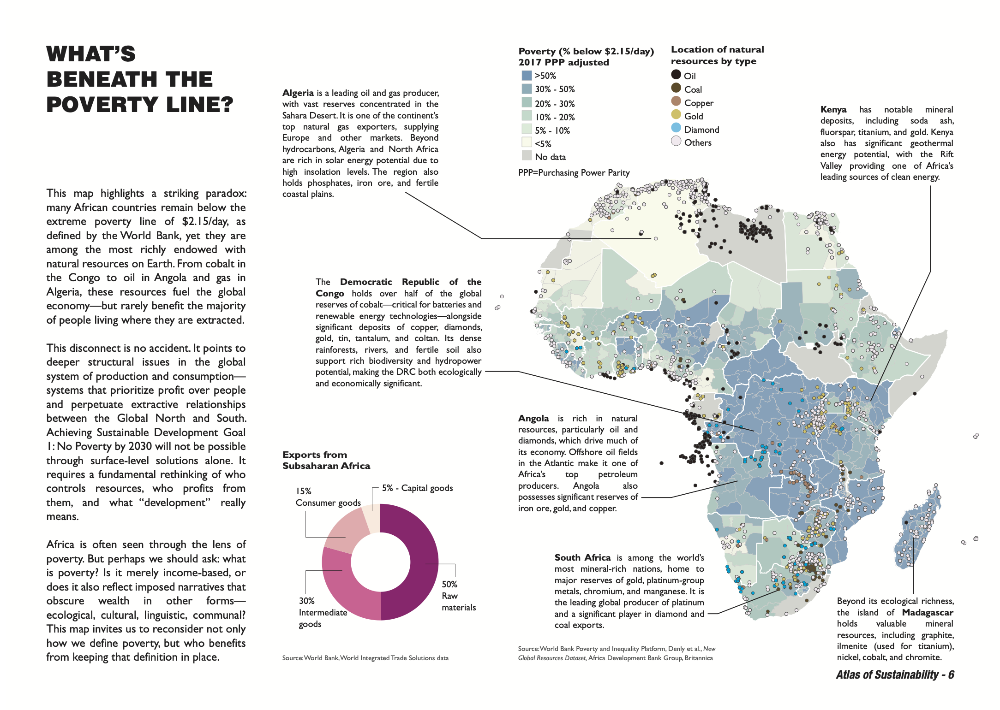

Cartographic and design work
{kind=link}

One river, many names: I created this map with QGIS and Affinity for Europe Magazine, highlighting the special cultural geography of the Danube river.

Hiking in Tharandt and Rabenau: this topographic map was developed as coursework at TU Dresden. It focuses on the principles of cartographic clarity and the industry standards for topographic maps. Created with QGIS.

Ecology of malaria: this scientific poster is a samle of various coursework porjects carried out for the "Geo-Health" module offered by ITC-Twente. Created with QGIS and Affinity.

Same topic, different message: for my Affective and Multiperspective Map Communication I created two maps with the same topic and same data, but with different messages thanks to the power of design. Tools: QGIS, Affinity.

Geology of the Schladminger Tauern: a panorama map of the orogeny and geology of a mountain chain in the Central-Eastern Alps. Group project completed in November 2025 with QGIS, Illustrator, ArcGIS and Blender.
{kind=link}

Forests of the EU: redesign challenge of a EU Eurostat map design. Completed in 2025 with QGIS and Illustrator.

Marmolada: glacier retreat on the Queen of the Dolomites. Project completed in 2025 with QGIS, Python and Illustrator.

Plav, Montenegro: a monochrome topographic map. Project completed in 2025 with QGIS and Illustrator.

What's beneath the poverty line? In May 2025, I was one of the cartographers who designed the "Atlas of Sustainability", a collection of 17 maps on the 17 UN SDGs.